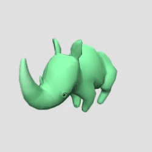

In October 2017, I designed, modeled, textured, rigged and skinned four stylized animals in ZBrush and Maya. With a team at WITHIN, I assembled them in a Three.js scene with head and mouth movements driven by multiple WebRTC voice input connections on the same page. Users connected to each other through WITHIN’s user accounts and rooms. This was an unreleased prototype called Bow Wow.

I started with ZSpheres in ZBrush for a quick base mesh with minimal retopology needed.
My original concept sketches.
In March 2018, I wanted to test out 3dhubs.com, a 3D printing service, because I’ve done some 3D printing in the past at the Dallas Makerspace, but I still don’t own a 3D printer. So I did some 3D print prep work on the rhino in ZBrush: subdivide / smooth the real-time low poly model (otherwise the print would look very faceted because there is no “smooth shading” in real life), combine all the parts (just the eyes and the body in this case) into one airtight mesh, and decimation to lower the poly count and decrease the file size again while keeping the smooth high resolution. Then I and did a test print on 3dhubs with that, and picked it up from the printer. Finally, in June 2018, I brushed on a coat of epoxy, airbrushed primer, airbrushed a color gradient, and added some details with a small paint brush.